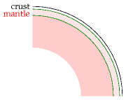
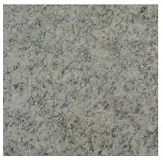
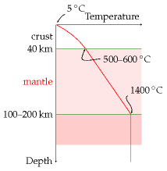
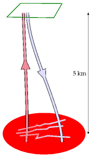
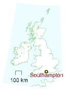
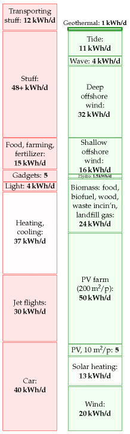

16 Geothermal

Figure 16.1. An earth in section.

Figure 16.2. Some granite.
Geothermal energy comes from two sources: from radioactive decay in the crust of the earth, and from heat trickling through the mantle from the earth’s core. The heat in the core is there because the earth used to be red-hot, and it’s still cooling down and solidifying; the heat in the core is also being topped up by tidal friction: the earth flexes in response to the gravitational fields of the moon and sun, in the same way that an orange changes shape if you squeeze it and roll it between your hands.
Geothermal is an attractive renewable because it is “always on,” independent of the weather; if we make geothermal power stations, we can switch them on and off so as to follow demand.
But how much geothermal power is available? We could estimate geothermal power of two types: the power available at an ordinary location on the earth’s crust; and the power available in special hot spots like Iceland (figure 16.3). While the right place to first develop geothermal technology is definitely the special hot spots, I’m going to assume that the greater total resource comes from the ordinary locations, since ordinary locations are so much more numerous.
The difficulty with making sustainable geothermal power is that the speed at which heat travels through solid rock limits the rate at which heat can be sustainably sucked out of the red-hot interior of the earth. It’s like trying to drink a crushed-ice drink through a straw. You stick in the straw, and suck, and you get a nice mouthful of cold liquid. But after a little more sucking, you find you’re sucking air. You’ve extracted all the liquid from the ice around the tip of the straw. Your initial rate of sucking wasn’t sustainable.
If you stick a straw down a 15-km hole in the earth, you’ll find it’s nice and hot there, easily hot enough to boil water. So, you could stick two straws down, and pump cold water down one straw and suck from the other. You’ll be sucking up steam, and you can run a power station. Limitless power? No. After a while, your sucking of heat out of the rock will have reduced the temperature of the rock. You weren’t sucking sustainably. You now have a long wait before the rock at the tip of your straws warms up again. A possible attitude to this problem is to treat geothermal heat the same way we currently treat fossil fuels: as a resource to be mined rather than collected sustainably. Living off geothermal heat in this way might be better for the planet than living unsustainably off fossil fuels; but perhaps it would only be another stop-gap giving us another 100 years of unsustainable living? In this book I’m most interested in sustainable energy, as the title hinted. Let’s do the sums.
(Figure omitted from this edition: third-party rights.)
Figure 16.3. Geothermal power in Iceland. Average geothermal electricity generation in Iceland (population, 300 000) in 2006 was 300 MW (24 kWh/d per person). More than half of Iceland’s electricity is used for aluminium production. Photo by Gretar Ívarsson.
Geothermal power that would be sustainable forever
First imagine using geothermal energy sustainably by sticking down straws to an appropriate depth, and sucking gently. Sucking at such a rate that the rocks at the end of the our straws don’t get colder and colder. This means sucking at the natural rate at which heat is already flowing out of the earth.
one milliwatt (1 mW) is 0.001 W.

Figure 16.4. Temperature profile in a typical continent.

Figure 16.5. Enhanced geothermal extraction from hot dry rock. One well is drilled and pressurized to create fractures. A second well is drilled into the far side of the fracture zone. Then cold water is pumped down one well and heated water (indeed, steam) is sucked up the other.
As I said before, geothermal energy comes from two sources: from radioactive decay in the crust of the earth, and from heat trickling through the mantle from the earth’s core. In a typical continent, the heat flow from the centre coming through the mantle is about 10 mW/m2. The heat flow at the surface is 50 mW/m2. 1 So the radioactive decay has added an extra 40 mW/m2 to the heat flow from the centre.
So at a typical location, the maximum power we can get per unit area is 50 mW/m2. But that power is not high-grade power, it’s low-grade heat that’s trickling through at the ambient temperature up here. We presumably want to make electricity, and that’s why we must drill down. Heat is useful only if it comes from a source at a higher temperature than the ambient temperature. The temperature increases with depth as shown in figure 16.4, reaching a temperature of about 500 °C at a depth of 40 km. Between depths of 0 km where the heat flow is biggest but the rock temperature is too low, and 40 km, where the rocks are hottest but the heat flow is 5 times smaller (because we’re missing out on all the heat generated from radioactive decay) there is an optimal depth at which we should suck. The exact optimal depth depends on what sort of sucking and powerstation machinery we use. We can bound the maximum sustainable power by finding the optimal depth assuming that we have an ideal engine for turning heat into electricity, and that drilling to any depth is free.
For the temperature profile shown in figure 16.4, I calculated that the optimal depth is about 15 km. Under these conditions, an ideal heat engine would deliver 17 mW/m2. At the world population density of 43 people per square km, that’s 10 kWh per person per day, if all land area were used. In the UK, the population density is 5 times greater, so wide-scale geothermal power of this sustainable-forever variety could offer at most 2 kWh per person per day.
This is the sustainable-forever figure, ignoring hot spots, assuming perfect power stations, assuming every square metre of continent is exploited, and assuming that drilling is free. And that it is possible to drill 15-km deep holes.
Geothermal power as mining
The other geothermal strategy is to treat the heat as a resource to be mined. In “enhanced geothermal extraction” from hot dry rocks (figure 16.5), we first drill down to a depth of 5 or 10 km, and fracture the rocks by pumping in water. (This step may create earthquakes, which don’t go down well with the locals.) Then we drill a second well into the fracture zone. Then we pump water down one well and extract superheated water or steam from the other. This steam can be used to make electricity or to deliver heat. What’s the hot dry rock resource of the UK? Sadly, Britain is not well endowed. Most of the hot rocks are concentrated in Cornwall, where some geothermal experiments were carried out in 1985 in a research facility at Rosemanowes, now closed. Consultants assessing these experiments concluded that “generation of electrical power from hot dry rock was unlikely to be technically or commercially viable in Cornwall, or elsewhere in the UK, in the short or medium term.” 2 Nonetheless, what is the resource? The biggest estimate of the hot dry rock resource in the UK is a total energy of 130 000 TWh, which, according to the consultants, could conceivably contribute 1.1 kWh per day per person of electricity for about 800 years. 3
Other places in the world have more promising hot dry rocks, 4 so if you want to know the geothermal answers for other countries, be sure to ask a local. But sadly for Britain, geothermal will only ever play a tiny part.

Doesn’t Southampton use geothermal energy already? How much does that deliver?
Yes, Southampton Geothermal District Heating Scheme 5 was, in 2004 at least, the only geothermal heating scheme in the UK. It provides the city with a supply of hot water. The geothermal well is part of a combined heat, power, and cooling system that delivers hot and chilled water to customers, and sells electricity to the grid. Geothermal energy contributes about 15% of the 70 GWh of heat per year delivered by this system. The population of Southampton at the last census was 217 445, so the geothermal power being delivered there is 0.13kWh/d per person in Southampton.

Figure 16.6. Geothermal.
Is a “geothermal” heat pump geothermal?
A section added in the 2026 revision. No — and the confusion is worth clearing up, because this chapter’s conclusion is discouraging and the shared name transfers that discouragement to a technology it never assessed.
Two different things with one name
This chapter is about deep geothermal: the heat flowing out of the Earth, about 40 mW/m2 from radioactive decay in the crust and about 10 mW/m2 arriving from the core through the mantle, for 50 mW/m2 at the surface. That is a genuine flux from a genuinely hot source, and MacKay’s finding is that it is small: at most 2 kWh/d per person for Britain on a sustainable-forever basis.
A ground-source heat pump does something else entirely. It uses the ground a few metres down as a reservoir at roughly 10°C and does work to lift heat from there to the 45°C a radiator wants. It belongs in chapter 7, with the other heat pumps. American usage calls it a “geothermal heat pump”, which is where most of the trouble comes from.
The arithmetic that settles it
Take MacKay’s own number: 0.05 W/m2 of geothermal flux at the surface.
Swedish practice, where borehole heat pumps are ordinary domestic equipment, gives the design figures directly. A borehole is drilled 90 to 200 m deep at 140 mm diameter, and yields at most about 140 kWh per metre of water-bearing borehole per year, with a peak draw near 50 W per metre. Parallel boreholes must be kept at least 20 m apart so that they do not cool each other’s ground.
So a 200 m hole with 190 m in water delivers about 26 600 kWh a year, and occupies roughly 400 m2 of ground at that spacing. That is 7.6 W/m2 as an annual average and about 24 W/m2 while running.
Set that against 0.05 W/m2. The borehole extracts roughly 150 times more heat than the Earth delivers to the ground above it, and nearly 500 times at peak.6
It cannot be running on the Earth’s heat. It is running on stored sunshine. The sun warms the ground through the summer, the heat pump takes it back out through the winter, and the cycle balances annually. The clearest evidence is the spacing rule itself: boreholes must be kept apart because they compete for a recharge that arrives from above, not from below. Undersized loops in cold climates are known to freeze their ground and lose performance year on year, which is precisely what happens when extraction outruns the solar recharge — and would be impossible if the heat were coming from the mantle.
Why the distinction matters
This chapter’s answer is deflating, and rightly so. Britain’s sustainable geothermal resource is around 2 kWh/d per person; the Southampton scheme, the country’s only geothermal district heating in 2004, delivers 0.13 kWh/d per person to the people of Southampton. Chapter 18’s table of power densities puts geothermal at 0.017 W/m2, the lowest entry in the book.
None of that applies to ground-source heat pumps. They achieved a seasonal performance factor of 2.81 in British field trials, the best of any heat-pump type measured there, as chapter 7 records. Their limits are capital cost, the ground works and the electricity-to-gas price ratio — not the Earth’s heat flow, which they were never using.
A reader who takes this chapter’s verdict and applies it to the heat pump in a neighbour’s garden has been misled by a word. The European term, ground-source heat pump, is the accurate one. The American “geothermal heat pump” describes a solar collector that happens to be buried.
Notes and further reading
The heat flow at the surface is 50 mW/m2. Massachusetts Institute of Technology (2006) says 59 mW/m2 average, with a range, in the USA, from 25 mW to 150 mW. Shepherd (2003) gives 63 mW/m2.↩︎
“Generation of electrical power from hot dry rock was unlikely to be technically or commercially viable in the UK”. Source: MacDonald et al. (1992). See also Richards et al. (1994).↩︎
The biggest estimate of the hot dry rock resource in the UK … could conceivably contribute 1.1 kWh per day per person of electricity for about 800 years. Source: MacDonald et al. (1992).↩︎
Other places in the world have more promising hot dry rocks. There’s a good study (Massachusetts Institute of Technology, 2006) describing the USA’s hot dry rock resource. Another more speculative approach, researched by Sandia National Laboratories in the 1970s, is to drill all the way down to magma at temperatures of 600–1300 °C, perhaps 15 km deep, and get power there. The website www.magma-power.com reckons that the heat in pools of magma under the US would cover US energy consumption for 500 or 5000 years, and that it could be extracted economically.↩︎
Southampton Geothermal District Heating Scheme. www.southampton.gov.uk.↩︎
Design figures are from Swedish practice, where borehole heat pumps are routine: boreholes of 90–200 m at 140 mm diameter, a maximum yield near 140 kWh per metre of water-bearing borehole per year, a peak draw around 50 W per metre, a minimum separation of 20 m between parallel boreholes and 10 m from a neighbouring property, and groundwater at a fairly constant 6–8°C. Swedish sources also give the heat pump’s own ratio as about four units of heat per unit of electricity, so roughly three quarters of the delivered heat comes from the ground. The comparison in the text is an order-of-magnitude argument, not a measurement, and every input varies: horizontal loops occupy far more area at lower intensity, yields in wet ground with moving groundwater are considerably higher because water carries heat in laterally, and the annual average assumes the borehole is worked to its design limit. None of that changes the conclusion, which survives being wrong by a factor of ten in either direction. Note finally that in genuinely geothermal locations — Iceland, parts of Italy and Turkey, the western United States — the flux is far above the continental average and shallow ground heat can be partly geothermal in origin; the argument here is about ordinary northern European ground.↩︎